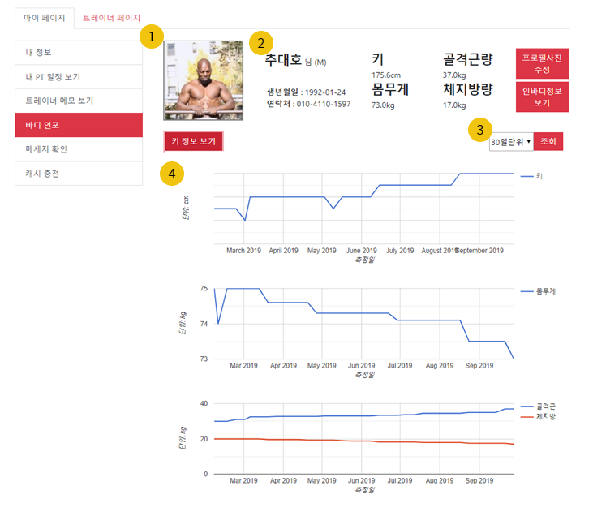
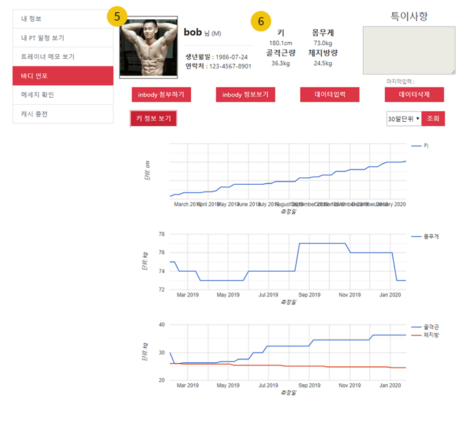
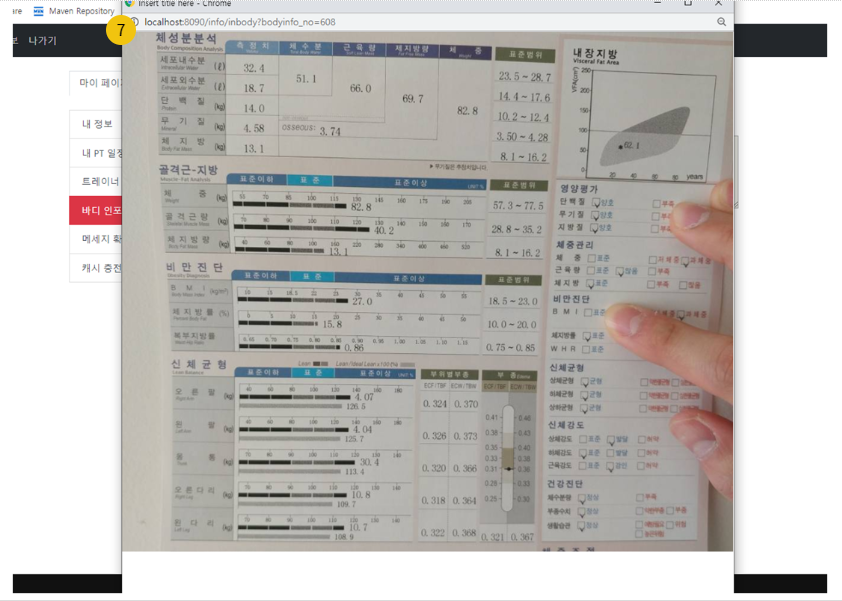
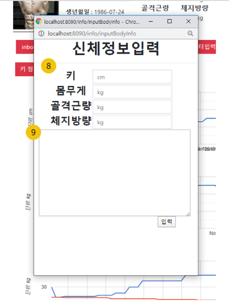
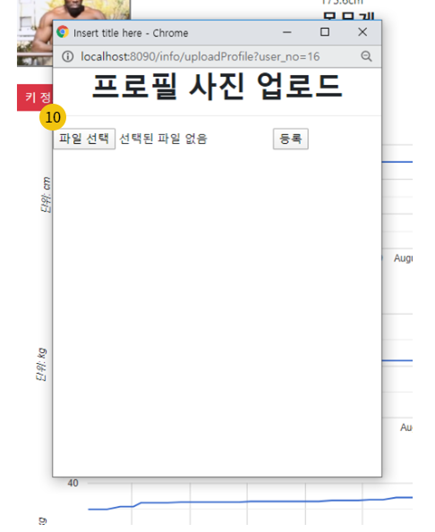
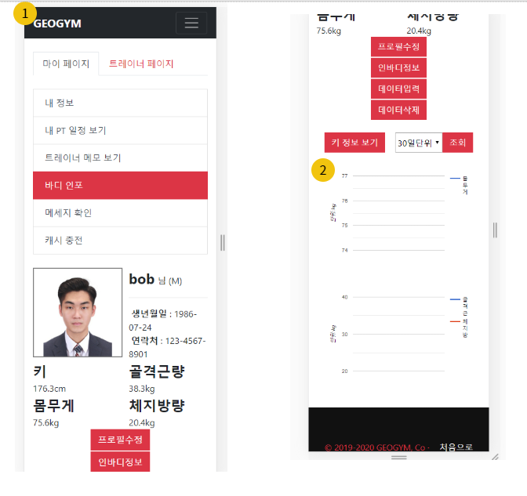
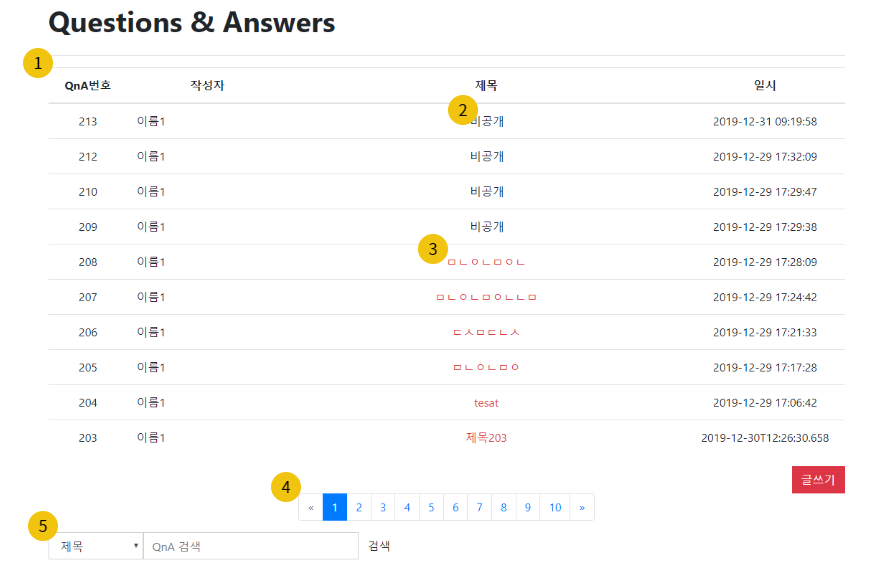
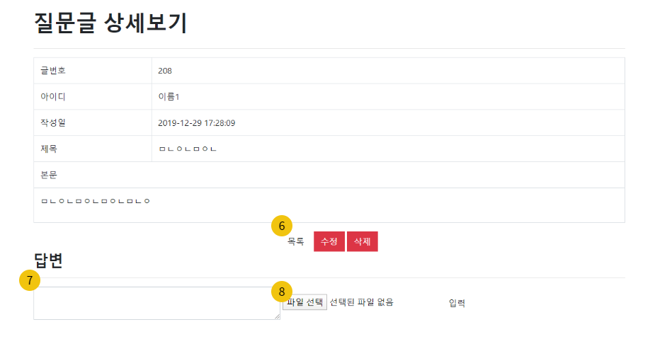
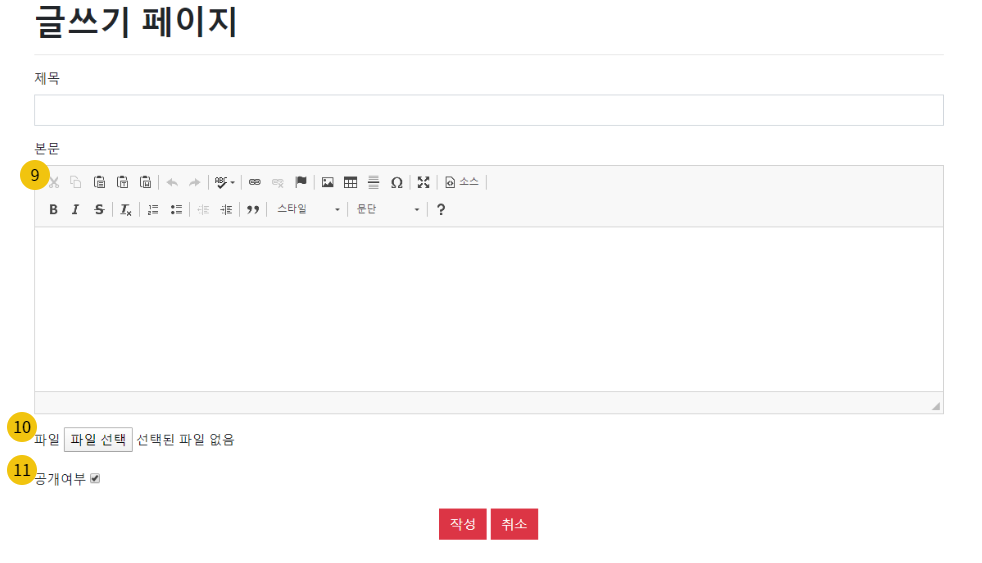

Daeho Choo
제가 진행한 두개의 프로젝트를 담은 포트폴리오 입니다. 기획 - 설계 - 구현 세가지 단계로 프로젝트를 진행하였으며 요약, 각종 다이어그램, 스토리보드 외에도 각 프로젝트의 상세 프레젠테이션과 프로젝트 진행 당시 연동시켰던 깃 리포지토리도 바로 이동 가능 하게끔 구현해 보았습니다. 아직 현업에서 일해본적이 없는 햇병아리 웹개발자의 작품이지만 프로젝트 기간동안 정말 열심히 작업하였습니다. 부족한 부분이 있더라도 부디 좋게 봐주시면 감사하겠습니다. 잘 부탁드립니다.
p.s. 이 포트폴리오는 PC해상도에 최적화 되어있습니다.
모바일 환경으로 접근시 불편할 수 있으므로 가급적 PC에서 봐주시면 감사하겠습니다.
Skills
Project1
지오짐(GeoGym)
홍보와 운영을 겸한 헬스장 홈페이지 및 솔루션을 구축한다.
개발환경
운영체제 : window10, Debian
서버 : Apache Tomcat 9.0
DBMS : SQLite
프레임워크 : Spring MVC framework 5.2.2, Spring Tool Suite 3, Bootstrap
라이브러리 : jQuery, AJAX
개발언어 : JAVA(JDK1.8), HTML5/CSS, JavaScript, JSP/Servlet, SQL
개발도구 : Eclipse, eXERD, draw.io, Git, DBbrowser
구현기능
1. 로그인(구글로 로그인) / 회원가입(정규식, 비밀번호 암호화, 이메일 인증)
2. QnA 게시판(공개여부설정, 댓글, 답변 조회수 노출, 검색 가능)
3. 마이페이지(개인프로필과 신체정보 노출 및 구글차트API를 활용한 신체 변화량 노출)
4. 트레이너 전용 담당회원 관리 페이지
5. 결제기능(카카오페이 API)
6. 달력을 이용한 스케쥴 관리
7. 알림 기능
8. 관리자 페이지(소속 트레이너 스케쥴 관리, 회원 정보 관리 등)
9. 구글 지도 API
10. 반응형웹 구현(부트스트랩 이용)
담당역할
1. 마이페이지
2. 트레이너전용 담당회원 관리 페이지
3. 반응형웹(담당페이지만)
4. QnA 게시판
5. 파일 업로드 / 다운로드
참여소감
JSP/servlet기반 구현 작업에 적응하기가 무섭게 새로운 개발 환경인 스프링 프레임워크에 또 다시 적응하느라 구현 초반에 애를 먹기도 했지만 점차 스프링 사용에 익숙해 지게 되었고 처음 접해보는 SQLite나 LocalDate타입 등 훈련과정동안 배웠던 기술 외에도 여러 가지 기술을 접해 볼수 있어서 좋았다.
프로젝트 세부 정보
ppt 파일 바로보기지오짐 Github 바로가기
Project1_Diagrams
 |
 |
 |
 |
 |
 |
.png) |
 |
 |
 |
 |
 |
Project1_Storyboards
 |
|
 |
|
 |
|
 |
 |
| 화면 설명 첫번째 : 회원이면 누구나 사용 가능한 마이페이지 |
|
| 구현기능설명
1. 업로드한 프로필사진 노출( commons_fileupload 사용 ) |
|
 |
|
| 화면 설명 스마트폰 액정 크기에 맞춰 레이아웃이 반응하는 마이페이지 및 트레이너 전용 담당회원 관리 페이지 |
|
| 구현기능설명
1. 현재 사용중인 디스플레이 해상도에 맞춰 반응하는 반응형 웹 구현 |
|
 |
 |
 |
| 화면 설명 상단 : QnA 게시판 게시글 목록 |
| 구현기능설명
1. 한 페이지당 10개씩 게시글 노출 |
Project2
방캅스(BangCops)
개발환경
운영체제 : window10
서버 : Apache Tomcat 9.0
DBMS : oracle 11g
프레임워크 : Bootstrap
라이브러리 : jQuery, AJAX
개발언어 : JAVA(JDK1.8), HTML5/CSS, JavaScript, JSP/Servlet, SQL
개발도구 : Eclipse, eXERD, draw.io, Git, sqldeveloper
구현기능
1. 구글 지도 API
2. 구글 차트 API
3. 키워드를 포함한 뉴스기사 크롤링
4. 회원가입( 정규식, 이메일 인증 ) / 로그인
5. 게시판( 목록, 작성, 검색, 수정, 삭제, 조회수, 추천, 댓글 )
6. 관리자 페이지( 회원 목록, 게시판 목록, 다중삭제 )
7. 마이페이지( 모아보기, 정보수정 )
8. 고객상담 1:1채팅 API (채널톡)
담당역할
1. 게시판( 자유,후기,공지사항,FAQ )
2. 메인페이지
3. 파일 업로드 / 다운로드
참여소감
첫 프로젝트였는데 구현을 막 시작했을때는 어려웠지만 하다보니 적응이 되었다. 기획했던 만큼 구현을 다 할 수 있을지 걱정했었는데 빠지는 부분 없이 구현되어서 다행이였고, MVC 패턴을 사용해 구현시 데이터가 어떤 흐름으로 전달되는지 알 수 있어서 좋았다. 어려워했던 AJAX 사용도 잘 할 수 있게돼 자신감이 생겼다.
프로젝트 세부 정보
ppt 파일 바로보기방캅스 Github 바로가기
Project2_Diagrams
 |
 |
 |
 |
 |
 |
 |
 |
 |
Project2_Storyboards
 |
| 화면 설명 사이트 메인페이지 및 하단 통계 |
| 구현기능설명
1. 시/구/상세주소로 검색 가능하게 구현, 검색시 신고 게시판의 검색 List로 자동으로 이동후 결과 노출 |
 |
 |
| 화면 설명 상단 : 사이트 전체의 커뮤니티 현황을 볼 수 있는 커뮤니티 메인페이지 |
| 구현기능설명
1. 각 게시판마다 key값을 부여해 여러 게시판을 쉽게 구현 할 수 있도록 함 |